الفكرة: أثرٌ من خرز
«أثر» ليست علامة تجارية. هي هوية ذكرى. لذلك قامت على شيءٍ يحمله الناس في أيديهم حين يذكرون الله: المسبحة. والأثر هو ما يبقى بعد رحيل صاحبه، من دعاءٍ وعملٍ صالح.
- ١خرزة الإمامالخرزة الذهبية الأكبر في أعلى الحلقة. في المسبحة تفصل بين البداية والنهاية، وهنا تمثّل الجزء الأول ونقطة البدء.
- ٢٣٠ خرزةخرزة لكل جزء من أجزاء القرآن الثلاثين. حين يُحجز جزء وتتم قراءته يكتمل العقد.
- ٣حلقتان متحدتا المركزأثرُ الماء حين يتّسع بعد سقوط قطرة: خيرٌ يمتد من شخصٍ إلى آخر ولا ينقطع. الحلقة الداخلية أرفع وأخف.
- ٤المعيّن الذهبييكرّر الزخرفة المستخدمة في الموقع (خط — معيّن — خط). وفتحته الداخلية معيّن أيضًا، فيبقى الشعار خفيفًا لا كتلة صلبة.
لماذا لا نار ولا شمعة؟
الحادثة حريق، والصورة الأولى التي تخطر في الذهن للذكرى هي الشمعة أو الشعلة. تجنّبناها عمدًا. أي لهب في شعار هذه المبادرة يعيد الحادثة إلى الأذهان بدل أن يهدئها. الخرز والماء والمعيّن أهدأ وأقرب إلى الدعاء.
لماذا الأخضر والذهبي؟
الأخضر لون الطمأنينة والجنة في الوجدان العربي، والذهبي لون المخطوطات والمصاحف. معًا يعطيان وقارًا لا فخامة تجارية. لا أحمر ولا برتقالي في أي موضع.
لماذا الخط الأميري؟
«أميري» نسخي كلاسيكي مستلهم من مطابع بولاق، مقروء ومألوف في كتب الأدعية والتفسير. كلمة «أثر» مرسومة بخطوطه ثم حُوِّلت إلى مسارات، فتظهر بنفس الشكل على أي جهاز.
الشعار ونسخه
أربع صيغ: العلامة وحدها، والأفقية، والرأسية، والكلمة. ولكل صيغة أربعة ألوان. اختر الصيغة الأوسع التي تتسع لها المساحة، ثم اللون المناسب للخلفية.
الصيغ الأساسية
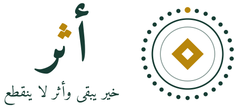
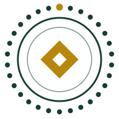
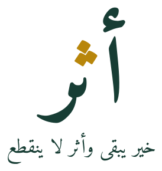
الألوان الأربعة لكل صيغة
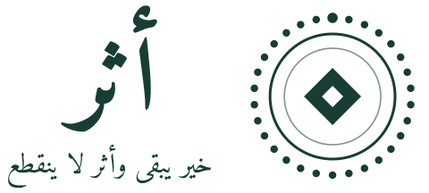
النسخة المخفّفة
تحت 64 بكسل تتزاحم الخرزات الثلاثون وتصير بقعة. لذلك يحوي مكوّن Logo في الموقع نسخة مخفّفة (12 خرزة وحلقة واحدة أثخن ومعيّن أكبر)، تُستخدم في الشريط العلوي والفوتر. وتحت 32 بكسل نستعمل أيقونة الـ favicon المبسّطة (انظر قسم الأيقونات).
مساحة الأمان والحد الأدنى
الشعار يحتاج أن يتنفس. لا يدخل في هذه المساحة نص ولا صورة ولا حافة.
X = ربع عرض العلامة. أي أنّ مساحة الأمان من كل جهة تساوي ربع عرض العلامة، وللصيغ الأفقية والرأسية يُقاس X من عرض العلامة داخلها.
خرزة الإمام الذهبية في الأعلى جزء من العلامة، فلا يُقص أي طرف منها ولا تُلصق بحافة الصفحة.
الحد الأدنى للعرض
32px فما فوق
16–31px
140px فما فوق
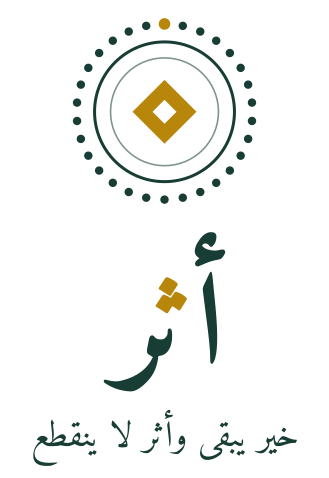
100px فما فوق
للمطبوعات: العلامة 10 مم والأفقي 35 مم والرأسي 25 مم كحد أدنى للعرض.
الألوان
أخضر هادئ على ورقٍ دافئ، وذهبٌ يُرى ولا يصرخ. كل قيمة مأخوذة من src/tokens.css فلا يوجد لون يعيش خارج النظام. ونسب التباين محسوبة حيًّا في هذه الصفحة.
النِّسب التقريبية
قاعدة الذهبي: الذهبي #D4AF37 و#B8860B للشعار والحدود والزخارف فقط. أي نص ذهبي على خلفية فاتحة يستعمل #836008 حصرًا (تباينه 5.58 على العاجي). لا أحمر ولا برتقالي في الهوية.
الخطوط
خطّان فقط. أميري للمعنى والوقار، وكايرو للواجهة والأرقام. كلاهما مجاني بترخيص OFL، فيجوز استعمالهما في أي مطبوع.
Amiri — أميري
الشعار، العناوين الكبرى، الأدعية والاقتباسات. الوزنان 400 و700.
Cairo — كايرو
الأزرار والقوائم والبطاقات والأرقام. الأوزان 400 إلى 800.
ارتفاع السطر 1.9 للنص العربي. التشكيل لا يُستخدم إلا حيث يلزم لقراءة صحيحة (الأدعية والآيات).
نبرة الصوت
نحن نكتب كما يتكلم من يجلس في مجلس عزاء: هادئ، قريب، لا يرفع صوته ولا يبيع شيئًا. المبادرة تطوعية، ولا يوجد ما نسوّقه.
نقول
- «اختر جزءك من القرآن، وشاركنا بما تستطيع.»
- «نسأل الله أن يتقبّلهم في الشهداء.»
- «تمّت القراءة. جزاك الله خيرًا.»
- جمل قصيرة، بصيغة المفرد المخاطب المهذّب، وبعربية واضحة لا تتكلف.
لا نقول
- «سارِع قبل نفاد الأجزاء!!» أو أي استعجال أو ضغط.
- وصف تفاصيل الحادثة أو أرقام الضحايا بأسلوب مثير.
- الرموز التعبيرية (الإيموجي)، خصوصًا النار والشموع والقلوب.
- لغة الحملات الإعلانية: «عرض»، «اشترك الآن»، «لا تفوّت».
الصور والزخارف
لا صور للحادثة ولا لأشخاص بعينهم. المسموح: الخرز، المعيّن، الخطوط الذهبية الرفيعة، النقوش الإسلامية الهندسية الهادئة، والأخضر العميق. تُحاط آية الدعاء بأقواس زاوية ذهبية، وتُفصل الأقسام بفاصل «خط — معيّن — خط».
ما لا نفعله بالشعار
كل الأمثلة أدناه تنفَّذ على الشعار الحقيقي بتحويل CSS، وهي كلها محظورة.
لا تمدّده أو تضغطه. حافظ على النسبة دائمًا.
لا تُدِره. الشعار يقف مستقيمًا.
لا تغيّر ألوانه لأحمر أو برتقالي أو أي لون خارج الباليت.
لا توهّج ولا ظلال. لا نيون ولا بريق.
لا تضعه على خلفية ضعيفة التباين. استعمل النسخة المعكوسة أو البيضاء.
لا فوق أنماط مزدحمة أو صور مشغولة.
الأيقونات (Favicon)
طقم كامل مولَّد من مصدر واحد (brand/tools/build_brand.py). عند الحجم 16 بكسل لا تتّضح ثلاثون خرزة، فصُمِّمت أيقونة مبسّطة: حلقة واحدة وخرزة الإمام والمعيّن على مربع أخضر بزوايا مستديرة. أما الأحجام الكبيرة فتحمل العلامة الكاملة.
هكذا تظهر الأيقونة في تبويب المتصفح بحجم 16px.
الملف favicon.ico يحوي ثلاثة أحجام: 16 و32 و48، رُسم كل منها منفصلًا ليظل حادًّا.
أيقونات التطبيق (العلامة الكاملة)
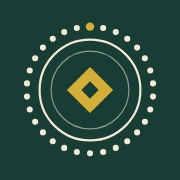
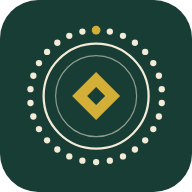
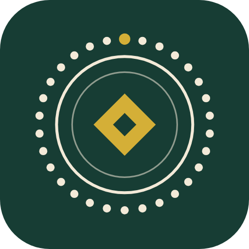
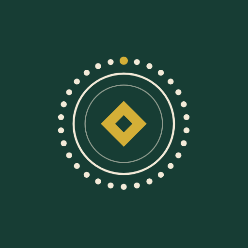
بطاقة المشاركة (Open Graph)
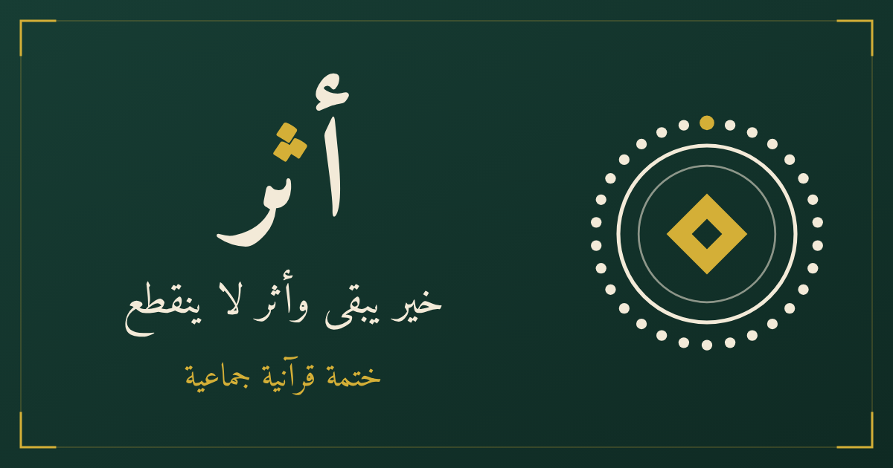
الربط في الموقع
<link rel="icon" href="/favicon.ico" sizes="48x48" />
<link rel="icon" href="/favicon.svg" type="image/svg+xml" />
<link rel="apple-touch-icon" href="/apple-touch-icon.png" />
<link rel="manifest" href="/site.webmanifest" />
<meta name="theme-color" content="#173d34" />
الشعار المجسّم والحركة
يُضاف هنا.
ملفات التسليم
كل الملفات في المستودع. تعديل الشعار يكون من brand/tools/build_brand.py ثم python brand/tools/build_brand.py all، فيُعاد توليد كل شيء معًا.
| الملف | الاستخدام |
|---|---|
| brand/logo/athar-{mark,wordmark,horizontal,stacked}-{color,reversed,mono,mono-white}.svg | 16 نسخة SVG للشعار. مسارات خالصة بلا اعتماد على خط مثبَّت. |
| brand/logo/athar-app-icon*.svg · athar-og.svg | مصادر أيقونات التطبيق وبطاقة المشاركة. |
| public/favicon.svg · favicon.ico | أيقونة المتصفح (مبسّطة). |
| public/apple-touch-icon.png · icon-192/512.png · icon-maskable-512.png | أيقونات الجوال والـ PWA. |
| public/og-image.png | بطاقة المشاركة 1200×630. |
| public/site.webmanifest | اسم التطبيق ولونه وأيقوناته. |
| src/tokens.css | المصدر الوحيد للألوان والأحجام (فاتح وداكن). |
| src/Logo.jsx | مكوّن React للشعار (كامل ومخفّف) والفاصل الزخرفي. |
| design-system/design-system.html | عرض المكوّنات كاملة. |